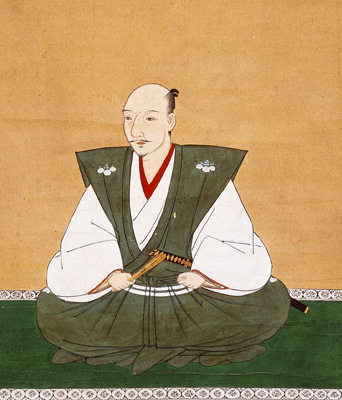
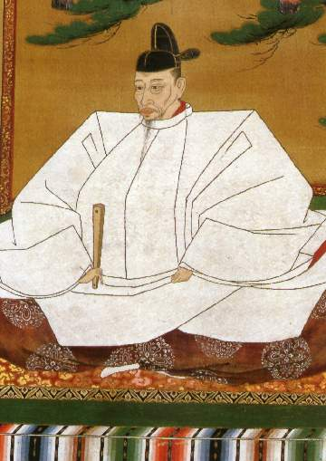

History, Benefits and Future of Go and Chess
Created: 2019-02-25 Mon 15:25
Introduction
Welcome
Intro video about Go
https://www.youtube.com/watch?v=d-bvsJWmqlc&feature=youtu.be&t=1020
History
Hon'inbō Sansa 本因坊 算砂

Meijin (名人) Brilliant Man
Oda Nobunaga 織田 信長

Toyotomi Hideyoshi 豊臣 秀吉

Tokugawa Ieyasu 徳川家康
The three Daimyō, (Land owners, Generals, Shoguns) who united the Japan
- Oda Nobunaga
- Toyotomi Hideyoshi
Tokugawa Ieyasu
And also students of Hon'inbō Sansa and players of Go
Wolfgang von Kempelen
Inventor, Councillor, Polymath
Turk - Chess Playing Machine
Alan Turing
Mathematician, Computer Scientist, Logician, Cryptanalyst, Philosopher and Theoretical Biologist
John McCarthy

Professor, researcher in computer science and pioneer in the field of artificial intelligence. Creator of Lisp programming language.
1966 Soviet Union vs USA Computer Chess Match
Correspondence match between the Kotok-McCarthy-Program and a program developed at the Moscow Institute of Theoretical and Experimental Physics (ITEP), written by Adelson-Velsky, Arlazarov, Uskov, Zhivotovsky.
Match was won by Russian team ITEP 3-1.
Mikhail Botvinnik Михаи́л Ботви́нник
Electrical engineer, computer scientist, teacher and World Chess Champion (1948 ~ 1963)
Botvinnik 1
The machine may play chess badly, like a beginning amateur, but the machine is not guilty. Man is guilty. He has not yet succeeded in teaching the machine, in transferring his experience to it…
To write a finished program, one must master both chess and the art of programming.
Botvinnik 2
Man solves inexact problems by relying on his accumulated experience and on intuition. The following method for creating an exact program for the solution of inexact tasks therefore suggests itself: the program must be modeled on human thought processes… It seems to me the only real way.
Garry Kasparov
World chess champion (1985 ~ 2000), writer, and political activist, whom many consider to be the greatest chess player of all time.
Deep Blue
Demis Hassabis
Games are the perfect proving ground for developing and testing AI algorithms.
AlphaGo
Lee Sedol vs AlphaGo 2016
Lee Sedol defeat
Master (January 2017)
The online version of AlphaGo which defeated multiple topl level players in many quick games played online.
AlphaGoZero
AlphaGoZero 2
AlphaGoZero Human Team
Chess and Go
https://youtu.be/d-bvsJWmqlc?t=1224
(20:55)
Games and Education
It’s still very useful to have a super-strong machine to play against and to analyze with, of course, but for a nonexpert it can be a bit like asking a calculator to be your algebra tutor.
Kasparov
Calmness
Concentration
Satisfaction Delay
Problem Solving
Conclusion
Garry Kasparov
Our attitude matters, and not because we can stop the march of technological progress even if we wanted to, but because our perspective on disruption affects how well prepared for it we will be.
Kasparov
Garry Kasparov 2
We say that a bad plan is better than no plan, at least in human chess. If you have a plan and it fails, you learn something. If you act aimlessly, from move to move, from decision to decision, whether in politics or business or chess, you don’t learn and will never become anything more than a skillful improviser.
Thank You
Let's play some games!
Where next?
- British Go Association Website for learning https://www.britgo.org/learning
- Online Go for playing http://online-go.com/
- To meet, drink, eat and play.
Mondays at the Inn of Court pub from 6pm until 11pm. (~ 10min walk from BB) http://citygoplayers.org.uk/
Contributions
- Wikipedia
- Sensei's Library
- https://www.samurai-archives.com/hideyoshi.html
- https://www.bl.uk/people/alan-turing
- John McCarthy photo by "null0" - https://www.flickr.com/photos/null0/272015955/, CC BY-SA 2.0, https://commons.wikimedia.org/w/index.php?curid=1297606
- https://www.chessprogramming.org/John_McCarthy
- Botvinnik photo By Harry Pot - [1] Dutch National Archives, The Hague, Fotocollectie Algemeen Nederlands Persbureau (ANEFO), 1945-1989, Nummer toegang 2.24.01.05 Bestanddeelnummer 914-4582, CC BY-SA 3.0 nl, https://commons.wikimedia.org/w/index.php?curid=20599117
- https://www.johnljerz.com/superduper/tlxdownloadsiteMAIN/id128.html
- https://deepmind.com/research/alphago/